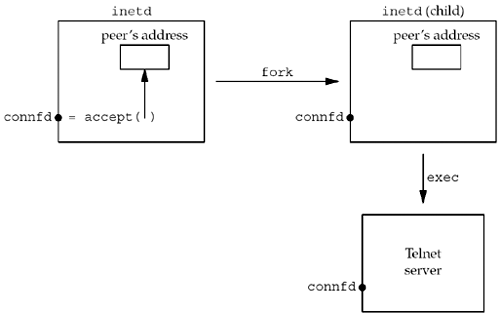

4.10 getsockname and getpeername Functions
These two functions return either the local protocol address associated with a socket (getsockname) or the foreign protocol address associated with a socket (getpeername).
#include <sys/socket.h> | int getsockname(int sockfd, struct sockaddr *localaddr, socklen_t *addrlen); | int getpeername(int sockfd, struct sockaddr *peeraddr, socklen_t *addrlen); | Both return: 0 if OK, -1 on error |
Notice that the final argument for both functions is a value-result argument. That is, both functions fill in the socket address structure pointed to by localaddr or peeraddr.
We mentioned in our discussion of bind that the term "name" is misleading. These two functions return the protocol address associated with one of the two ends of a network connection, which for IPV4 and IPV6 is the combination of an IP address and port number. These functions have nothing to do with domain names (Chapter 11).
These two functions are required for the following reasons:
After connect successfully returns in a TCP client that does not call bind, getsockname returns the local IP address and local port number assigned to the connection by the kernel. After calling bind with a port number of 0 (telling the kernel to choose the local port number), getsockname returns the local port number that was assigned. getsockname can be called to obtain the address family of a socket, as we show in Figure 4.19. In a TCP server that binds the wildcard IP address (Figure 1.9), once a connection is established with a client (accept returns successfully), the server can call getsockname to obtain the local IP address assigned to the connection. The socket descriptor argument in this call must be that of the connected socket, and not the listening socket. When a server is execed by the process that calls accept, the only way the server can obtain the identity of the client is to call getpeername. This is what happens whenever inetd (Section 13.5) forks and execs a TCP server. Figure 4.18 shows this scenario. inetd calls accept (top left box) and two values are returned: the connected socket descriptor, connfd, is the return value of the function, and the small box we label "peer's address" (an Internet socket address structure) contains the IP address and port number of the client. fork is called and a child of inetd is created. Since the child starts with a copy of the parent's memory image, the socket address structure is available to the child, as is the connected socket descriptor (since the descriptors are shared between the parent and child). But when the child execs the real server (say the Telnet server that we show), the memory image of the child is replaced with the new program file for the Telnet server (i.e., the socket address structure containing the peer's address is lost), and the connected socket descriptor remains open across the exec. One of the first function calls performed by the Telnet server is getpeername to obtain the IP address and port number of the client.

Obviously the Telnet server in this final example must know the value of connfd when it starts. There are two common ways to do this. First, the process calling exec can format the descriptor number as a character string and pass it as a command-line argument to the newly execed program. Alternately, a convention can be established that a certain descriptor is always set to the connected socket before calling exec. The latter is what inetd does, always setting descriptors 0, 1, and 2 to be the connected socket.
Example: Obtaining the Address Family of a Socket
The sockfd_to_family function shown in Figure 4.19 returns the address family of a socket.
Figure 4.19 Return the address family of a socket.
lib/sockfd_to_family.c
1 #include "unp.h"
2 int
3 sockfd_to_family(int sockfd)
4 {
5 struct sockaddr_storage ss;
6 socklen_t len;
7 len = sizeof(ss);
8 if (getsockname(sockfd, (SA *) &ss, &len) < 0)
9 return (-1);
10 return (ss.ss_family);
11 }
Allocate room for largest socket address structure
5 Since we do not know what type of socket address structure to allocate, we use a sockaddr_storage value, since it can hold any socket address structure supported by the system.
Call getsockname
7–10 We call getsockname and return the address family.
Since the POSIX specification allows a call to getsockname on an unbound socket, this function should work for any open socket descriptor.
 |